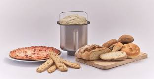
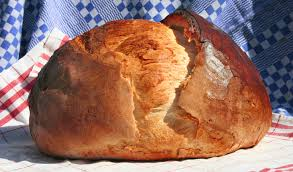

Ezen az oldalon arról olvashatsz hogy a kenyér hogy hozza össze a családot és mi a szerepe a család életében!
A család életében mindíg fontos szerepe volt a közös kenyér elkészítésének!
Remek családi program a kenyér készítés és egyszerű!
 A kenyér sütés hagyományos módszerrel nem csak arra jó hogy a végén legyen egy finom és tápláló ennivalód de jó szórakozás és bármijen korosztály számára tökéletes program!